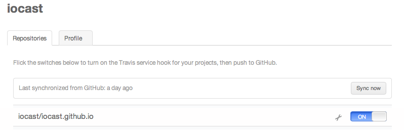

Github offers at the time of writing three different types of pages: for users, organizations and projects. For the users and organizations the master branch is going to be used to deploy as static web page. For projects, means in a repository which is not called username.github.io, a subpath of the user pages would be created username.github.io/projectname.
Hence this post is going to discuss the a simple workflow using Github’s user pages, jekyll as blog and pseudo dynamic page, travis as our continuous integration solution for deployment purposes.
First setup a new user page on Github using for example the page generator or simply setting up a new repository called username.github.io. Github will automatically create a new master branch which is used for deploying the content to the web server. In our case, we need to have a separate branch for our blog which is setup using jekyll. Therefore create a new branch e.g. called develop as follow
# Creates our branch, without any parents (it's an orphan!) |
Now we are ready to add our jekyll page to this develop branch.
Now that we have a master and develop branch, former for the jekyll compilation and later for your source, we can setup our blog. As described in the jekyll documentation we need to have at least a _layouts directory for the templates that wrap posts, a _posts for dynamic content and the rest of html and other files for you layout.
In addition we need to setup a _config.yml file to tell jekyll the compilation options. A example could look like the following:
destination: ./_site lsi: true pygments: true markdown: rdiscount permalink: date rdiscount: extensions: [smart] exclude: ['Gemfile', 'Gemfile.lock', 'Rakefile', 'README.md', 'update-gh-pages.sh'] |
Travis is used to automatically deploy the develop branch and push the result of the jekyll build output to the master branch which the would be published to the Github pages.
For that we need first to get travis access to our Github repository. If you do not have a travis account register one on the homepage. On The travis homepage go to the account settings and get access to the appropriate repository like in the image below:

The next step is to configure the build process. For that create a new file called .travis.yml in the root directory of the develop branch and add the master branch to the blacklist and the develop branch to the whitelist.
language: ruby rvm: 1.9.3 branches: except: - master branches: only: - develop script: rake travis |
As you can see in the .travis.yml file the jekyll deployment starts with the command rake travis which is implemented in the Rakefile file which uses the Gemfile for ruby library dependencies. So create the files Gemfile and Rakefile in the root directory of the develop branch.
For the above _config.yml configuration add the following RubyGem dependencies to the Gemfile:
source 'http://rubygems.org' |
For travis deployment add the following task to the Rakefile:
#!/usr/bin/env rake |
Lastly we need to create a bash script to push the compiled jekyll page to the master branch. For that authorize travis to do commits and pushed as follow:
curl -X POST -u <your_github_username> -H "Content-Type: application/json" -d "{\"scopes\":[\"public_repo\"],\"note\":\"token for pushing from travis\"}" https://api.github.com/authorizations |
and copy the token key from the json result.
Now install the travis gem, encrypt the values of environment variables and add it to the .tavis.yml file:
gem install travis |
Lastly you need to create a bash file which pushes the update to he master branch using the GH_TOKEN which was encrypted before and need to be registered in the .travis.yml as after_success task:
if [ "$TRAVIS_PULL_REQUEST" == "false" ]; then |
and add the following lines to the end of the .travis.yml file:
after_success: ./update-gh-pages.sh |